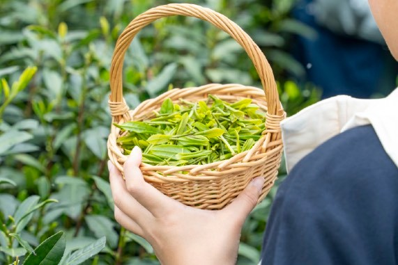
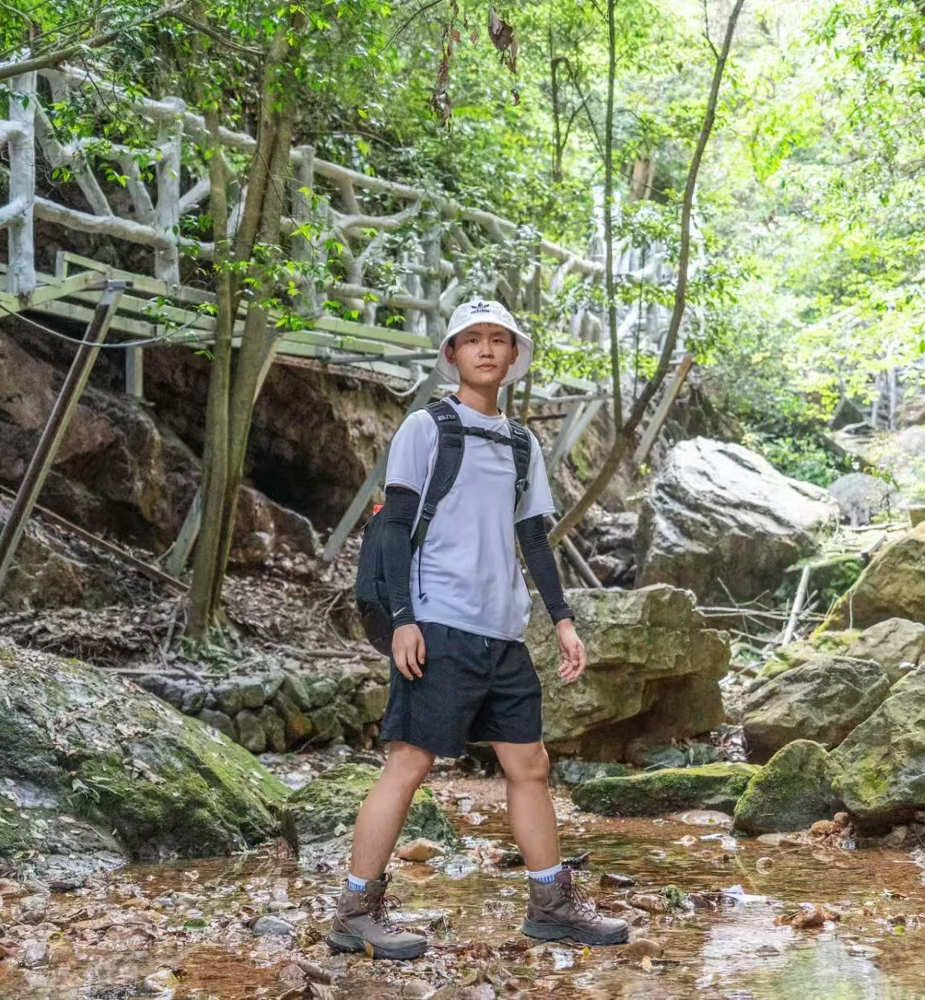

Selected Works
Hiking / Forest Trail
步道、队伍节奏、抵达与途中观察。
Clean Editorial Nature Documentary
儿童户外研学纪实摄影
记录孩子在四季自然里的探索、行动与成长。
Documentary photography for children’s outdoor learning, from forest trails to snowy fields.

For forest trails, stream crossings, field studies and winter camps. A quiet archive of movement, weather, attention and growth.
Four Seasons
以季节作为内容线索，进入孩子在春、夏、秋、冬自然活动中的观察、行动与故事。
Selected Works
从山野徒步、茶田观察到溪流与雪地活动，以连续影像记录孩子在不同自然场景中的行动与成长。
Selected Works
步道、队伍节奏、抵达与途中观察。

Selected Works
湿透的鞋、石头之间的判断和夏季水线。

Selected Works
茶田里的手势、气味、坡地和春天的工作感。

Selected Works
泥土、协作、挖掘和丰收之前的身体经验。
Approach
尽量不打断孩子的活动状态，以观察和跟随的方式记录真实瞬间。
从抵达、行进、观察、互动到结束，完整记录一场活动的过程，而不是只拍几张好看的照片。
后期调色保持通透、自然、克制，让孩子的神情和环境本身成为画面重点。
照片既适合家长查看，也适合研学机构用于公众号、小红书、官网、招生物料和品牌传播。
Services
我不仅是摄影师，也具备设计师视角，理解机构宣传、品牌内容和家长反馈的使用场景。

About
我是一名设计师，也是一名长期关注户外与纪实影像的摄影师。因为热爱山野、跑步和自然活动，我更习惯在真实环境中观察人与环境的关系。
在儿童研学拍摄中，我希望记录的不只是“孩子参加了一场活动”，而是他们在自然中探索、尝试、协作和成长的具体瞬间。
我的拍摄方式尽量保持低干扰，以纪实视角记录活动过程，同时兼顾机构后续宣传、家长反馈和长期内容沉淀的需要。
Contact
如果你正在筹备一场儿童户外研学、营地、自然探索或四季主题活动，欢迎联系我一起记录它。
Email yourname@example.com
WeChat your-wechat-id
Location Hangzhou / Available for travel
Start a Conversation